Founded MEMSIC, Inc.
MEMSIC was founded to commercialize advanced MEMS sensor technology.
Who We Are
Headquartered in Boston Area, ACEINNA is an innovative semiconductor IC sensor company specializing in high-performance current, inertial, and flow sensing solutions. Combining deep expertise in MEMS and magnetic sensing with practical engineering, our innovations help customers solve complex challenges in power efficiency, motion measurement, and flow control.
Our sensor products are deployed from AI data centers and robotics to smart agriculture, precision agriculture machines, construction equipment automation, and medical instruments. Through close collaboration with customers, we turn sensing innovation into reliable, scalable solutions that bring the next generation of intelligent systems to life.
THE JOURNEY OF INNOVATIONS BY OUR TEAM
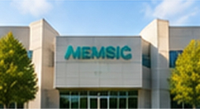
MEMSIC was founded to commercialize advanced MEMS sensor technology.
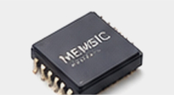
A monolithic CMOS thermal accelerometer brought highly integrated MEMS sensing into high-volume applications.
Accelerometers were adopted to protect notebook hard drives from shock.
Accelerometer-based orientation sensing helped bring motion awareness to mobile phones.
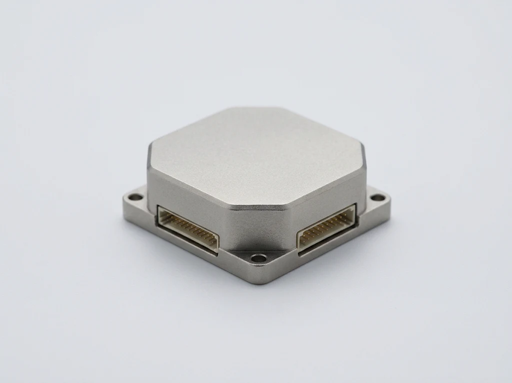
World’s first MEMS IC based IMU passing FAA aviation certification, with product deployed in over 30 models of military and commercial aircraft
A major milestone in bringing MEMS technology to global markets.
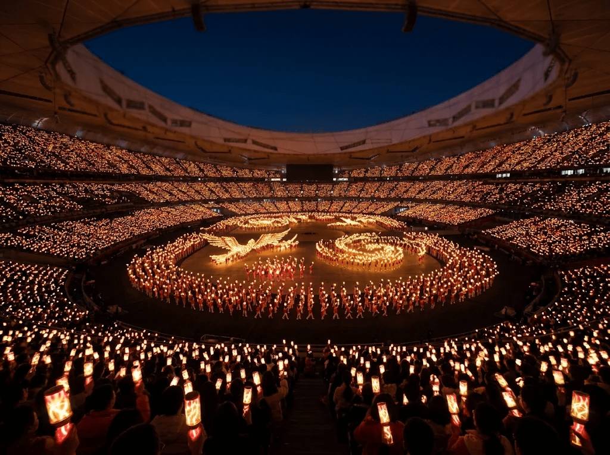
Produced and donated 100,000 LED display torches powered by our accelerometer inside which lit up the whole stadium during the 2008 Beijing Olympic Opening Ceremony
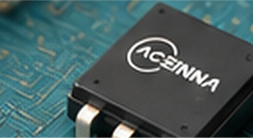
Expanded the technology base into AMR magnetic sensing for high-volume consumer applications.
Completed construction of the thin-film magnetic fab and expanded in-house magnetic sensing capability.
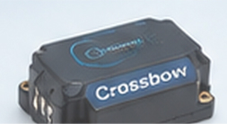
Expanded the inertial systems portfolio through the acquisition of Crossbow’s commercial inertial business.
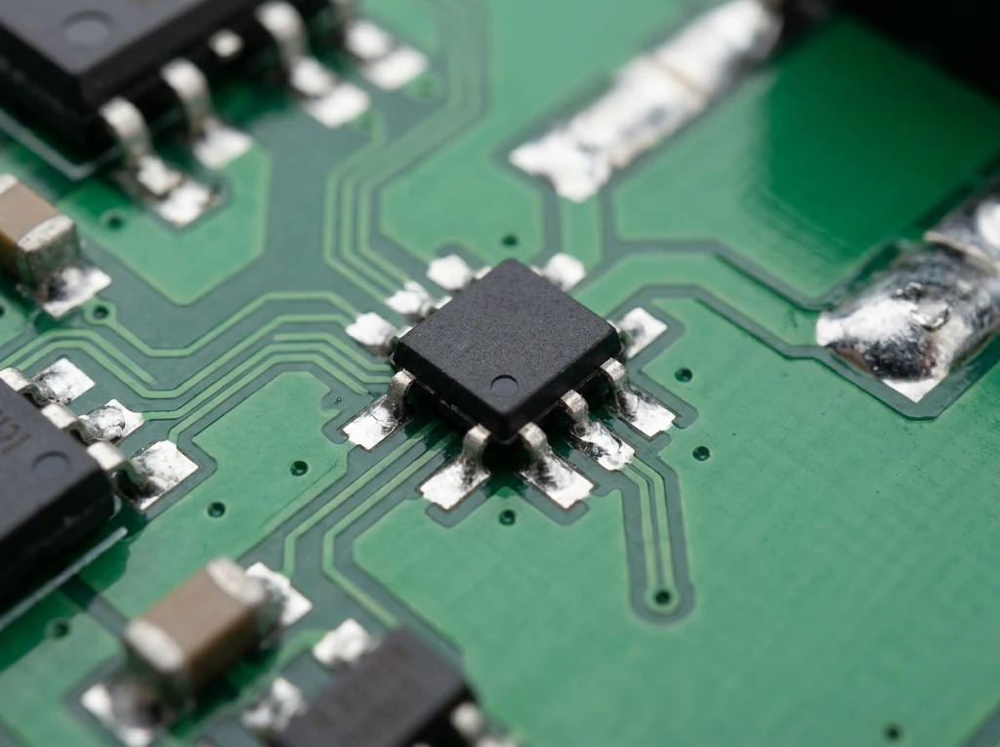
Introduced world’s first AMR current sensor
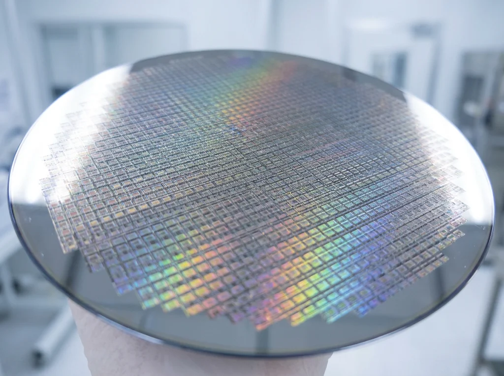
Billions of MEMS sensors shipped
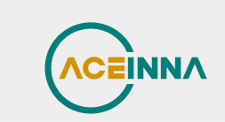
ACEINNA was established to focus on the next generation of sensing solutions.
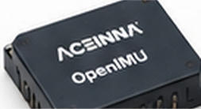
Introduced an open-source IMU platform with open-source navigation software.
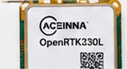
Integrated GNSS/RTK positioning with triple-redundant inertial sensing.
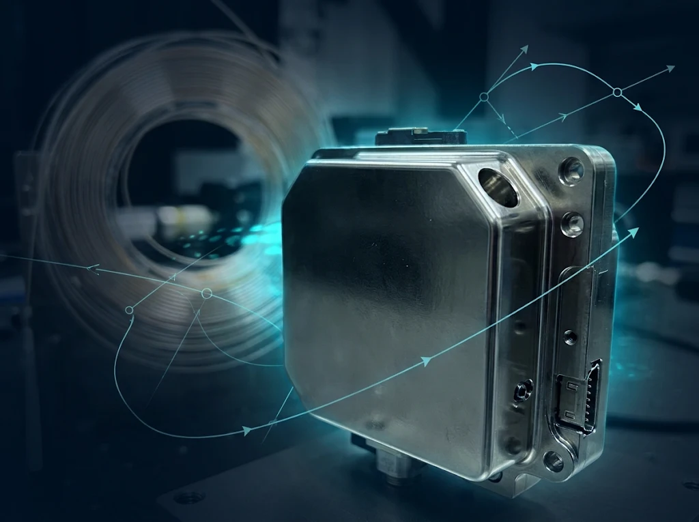
Demonstrated navigation grade MEMS based gyro sensors that is outperforming the high performance optical fiber gyro
Innovation Proven at Scale
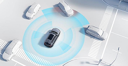